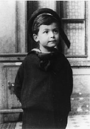

John von Neumann
 John von Neumann, een opmerkelijke figuur in de wereld van de techniek, heeft een blijvende impact gehad op de ontwikkeling van computers. Hij werd geboren in 1903 in Boedapest en stond bekend om zijn uitzonderlijke intellectuele vaardigheden, waaronder vloeiendheid in zes talen en een fotografisch geheugen. Maar zijn grootste bijdrage aan de wereld van de technologie is de uitvinding van de Von Neumann-architectuur, die de basis legde voor moderne computersystemen.
Uitvinding van de Von Neumann-architectuur
Bekijk deze video op YouTubeThe Von Neumann Architecture
In de jaren 1940 stelde John von Neumann de basis voor de meest moderne computersystemen voor: de Von Neumann-architectuur. Dit concept, dat tot op de dag van vandaag van onschatbare waarde is, heeft computersystemen getransformeerd en hen in staat gesteld om complexe taken uit te voeren.
Hoofdcomponenten van de Von Neumann-architectuur

De Von Neumann-architectuur bestaat uit verschillende essentiële componenten:
- Centrale Verwerkingseenheid (CPU): De CPU is het brein van de computer en voert alle berekeningen en instructies uit. Het bestaat uit een Arithmetic Logic Unit (ALU), een rekenkern voor wiskundige en logische bewerkingen, en een controle-eenheid (CU) die instructies ophaalt en uitvoert.
- Geheugen: Dit slaat programma-instructies en gegevens op. Het omvat RAM (Random Access Memory) voor tijdelijke opslag en ROM (Read-Only Memory) voor permanente instructies.
- Opslag: Secundaire opslagmedia zoals harde schijven, SSD's, USB-drives en andere apparaten waarop gegevens op lange termijn worden opgeslagen.
- Invoer/Uitvoer (Input/Output): Gegevens worden ingevoerd in de computer en resultaten worden weergegeven en opgeslagen. Dit omvat randapparatuur zoals toetsenborden, muizen, beeldschermen en printers.
- Bussysteem: Dit verwijst naar een systeem van fysieke verbindingen waarmee gegevens en instructies tussen de CPU, het geheugen en de input/output apparaten worden doorgegeven.
Voordelen van de Von Neumann-architectuur
De Von Neumann-architectuur biedt verschillende voordelen, waaronder:
- Programmaopslag in het geheugen: Hierdoor kunnen programma's dynamisch worden geladen en gewijzigd, waardoor computers flexibel en programmeerbaar zijn.
- Modulaire ontwerp: Door de scheiding van CPU, geheugen en opslag kunnen deze componenten afzonderlijk worden ontwikkeld en vervangen, wat modulariteit en schaalbaarheid mogelijk maakt.
- Universaliteit: De Von Neumann-architectuur kan worden toegepast op verschillende soorten computers en taken.
- Efficiënte instructieverwerking: De CPU kan sequentieel instructies uitvoeren, wat zorgt voor gestructureerde en efficiënte taakuitvoering.
Persona
Hij maakte eens de opmerking: "Waarom niet om een uur de atoombom gooien?" Hoewel dit als een grappige opmerking klinkt, heeft het een diepere betekenis. Met deze opmerking wilde von Neumann benadrukken hoe ernstig en angstaanjagend de kracht van atoombommen is. Hij wilde dat mensen nadenken over de gevolgen van het gebruik van deze verwoestende wapens. Zijn opmerking herinnert ons eraan dat we voorzichtig moeten zijn en moeten streven naar vrede en internationale samenwerking om de wereld veiliger te maken. Het toont ook von Neumann's vermogen om complexe kwesties op een slimme en impactvolle manier aan te kaarten.
Overlijden
John von Neumann overleed op 8 februari 1957 op de leeftijd van 53 jaar aan de gevolgen van kanker. Zijn vroegtijdige dood was een groot verlies voor de wetenschappelijke gemeenschap. Desondanks blijft zijn erfenis voortleven door zijn revolutionaire bijdragen aan de wereld van de informatica en zijn invloed op moderne computersystemen.